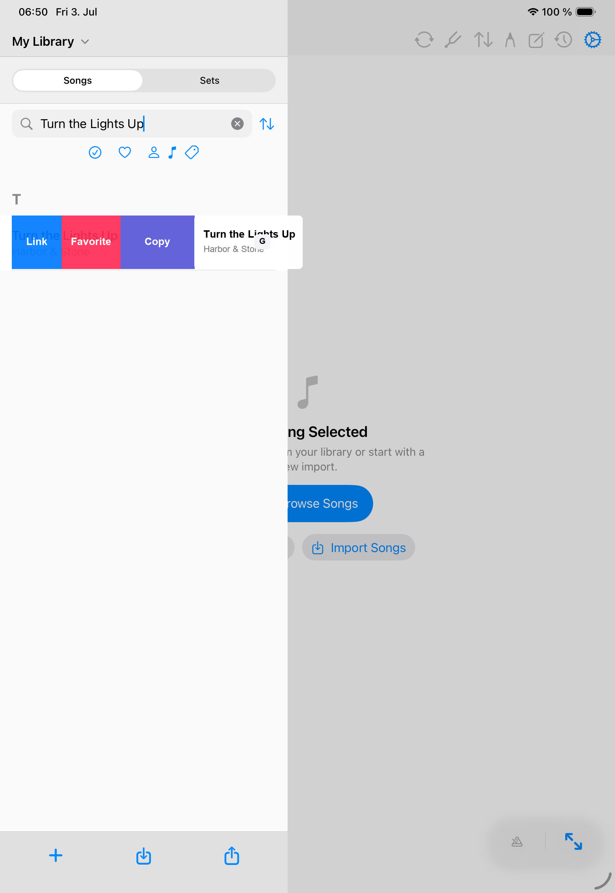

Library
Link Songs
Linked songs keep related charts together while preserving each song as its own library item.

When to link songs
Use linked songs when one performance item needs more than one chart, such as an intro, reprise, medley part, alternate key chart, or separate PDF attachment. The main song remains the item you place in a setlist, and linked songs can follow it during performance navigation.
Create a link
- Open the song library in the correct personal or band library.
- Swipe the main song row from the leading edge.
- Tap Link.
- Choose the song that should follow the main song.
- Repeat for additional related songs when needed.
Manage linked songs
- Open the linked songs manager from the song editor when you need to add, remove, or reorder linked songs.
- A song that already follows another main song cannot also become a separate main linked group.
- Unlink from the follower row when the song should stand on its own again.
- Links belong to the selected library context, so personal and band libraries stay independent.